- 00 开篇词 打破四大认知局限，进阶高级性能工程师.md.html
- 01 性能工程：为什么很多性能测试人员无法对性能结果负责？.md.html
- 02 关键概念：性能指标和场景的确定.md.html
- 03 核心分析逻辑：所有的性能分析，靠这七步都能搞定.md.html
- 04 如何构建性能分析决策树和查找瓶颈证据链？.md.html
- 05 性能方案：你的方案是否还停留在形式上？.md.html
- 06 如何抽取出符合真实业务场景的业务模型？.md.html
- 07 性能场景的数据到底应该做成什么样子？.md.html
- 08 并发、在线和TPS到底是什么关系？.md.html
- 09 如何设计全局和定向监控策略？.md.html
- 10 设计基准场景需要注意哪些关键点？.md.html
- 11 打开首页之一：一个案例，带你搞懂基础硬件设施的性能问题.md.html
- 12 打开首页之二：如何平衡利用硬件资源？.md.html
- 13 用户登录：怎么判断线程中的Block原因？.md.html
- 14 用户信息查询：如何解决网络软中断瓶颈问题？.md.html
- 15 查询商品：资源不足有哪些性能表现？.md.html
- 16 商品加入购物车：SQL优化和压力工具中的参数分析.md.html
- 17 查询购物车：为什么铺底参数一定要符合真实业务特性？.md.html
- 18 购物车信息确定订单：为什么动态参数化逻辑非常重要？.md.html
- 19 生成订单信息之一：应用JDBC池优化和内存溢出分析.md.html
- 20 生成订单信息之二：业务逻辑复杂，怎么做性能优化？.md.html
- 21 支付前查询订单列表：如何分析优化一个固定的技术组件？.md.html
- 22 支付订单信息：如何高效解决for循环产生的内存溢出？.md.html
- 23 决定容量场景成败的关键因素有哪些？.md.html
- 24 容量场景之一：索引优化和Kubernetes资源分配不均衡怎么办？.md.html
- 25 容量场景之二：缓存对性能会有什么样的影响？.md.html
- 26 稳定性场景之一：怎样搞定业务积累量产生的瓶颈问题？.md.html
- 27 稳定性场景之二：怎样搞定磁盘不足产生的瓶颈问题？.md.html
- 28 如何确定异常场景的范围和设计逻辑？.md.html
- 29 异常场景：如何模拟不同组件层级的异常？.md.html
- 30 如何确定生产系统配置？.md.html
- 31 怎么写出有价值的性能报告？.md.html
- 我们这个课程的系统是怎么搭建起来的？.md.html
- 结束语 做真正的性能项目.md.html
- 捐赠
15 查询商品：资源不足有哪些性能表现？
你好，我是高楼。
这节课，我们来收拾“查询商品”这个接口。虽然这次的现象同样是TPS低、响应时间长，但是，这个接口走的路径和之前的不一样，所以在分析过程中会有些新鲜的东西，你将看到在资源真的不足的情况下，我们只有增加相应节点的资源才能提升性能。
在我的项目中，我一直都在讲，不要轻易给出资源不足的结论。因为但凡有优化的空间，我们都要尝试做优化，而不是直接告诉客户加资源。而给出“增加资源”这个结论，也必须建立在有足够证据的基础上。在这节课中，你也将看到这一点。
话不多说，我们直接开始今天的内容。
压力场景数据
对于查询商品接口，我们第一次试执行性能场景的结果如下：
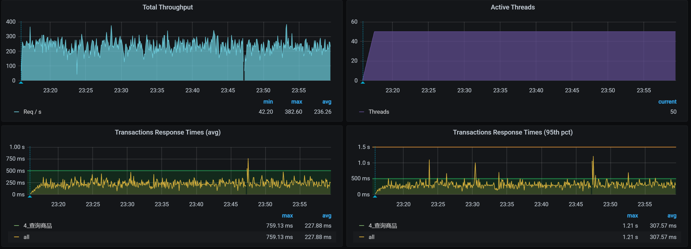
你看，TPS只有250左右，并且响应时间也明显随着压力的增加而增加了，看起来瓶颈已经出现了，对吧？根据哥的逻辑，下一步就是看架构图啦。
先看架构图
我们用APM工具来看看这个接口的架构。
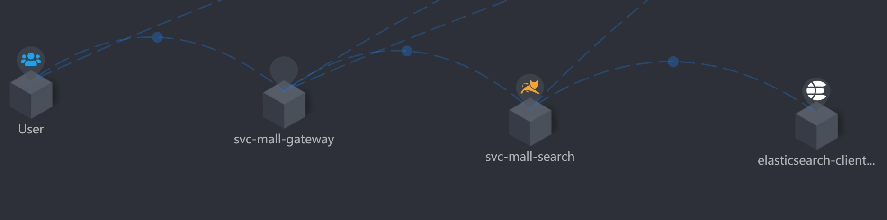
你看，从压力机到Gateway服务、到Search服务、再到ES-Client，这个APM工具也只能帮我们到这里了。因为我们用的是ElasticSearch 7来做的搜索服务的支撑，而这个skywalking工具也没有对应的Agent，所以后面并没有配置skywalking。
在这里，我要多啰嗦几句。现在的APM工具大多是基于应用层来做的，有些运维APM采集的数据会更多一些，但也是响应时间、吞吐量等这样的信息。对于性能分析而言，现在的APM工具有减少排查时间的能力，但是在组件级的细化定位上还有待提高。虽然AI OPS也被提到了台面，但是也没见过哪个公司上了AIOPS产品后，就敢不让人看着。
总之，从细化分析的角度，我们在定位问题的根本原因时，手头有什么工具就可以用什么工具，即使什么工具都没有，撸日志也是照样能做到的，所以我建议你不要迷信工具，要“迷信”思路。
下面我们来拆分下这个接口的响应时间，看看这个案例的问题点在哪里。
拆分响应时间
“在RESAR性能分析逻辑中，拆分响应时间只是一个分析的起点。”这是我一直在强调的一句话。如果性能工程师连这个都不会做，就只能好好学习天天向上了。
根据架构图，我们拆分响应时间如下。
- Gateway服务上的响应时间：
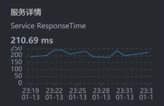
- Search服务上的响应时间：
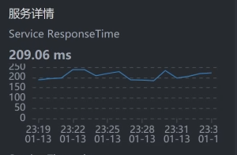
- ES Client的响应时间：
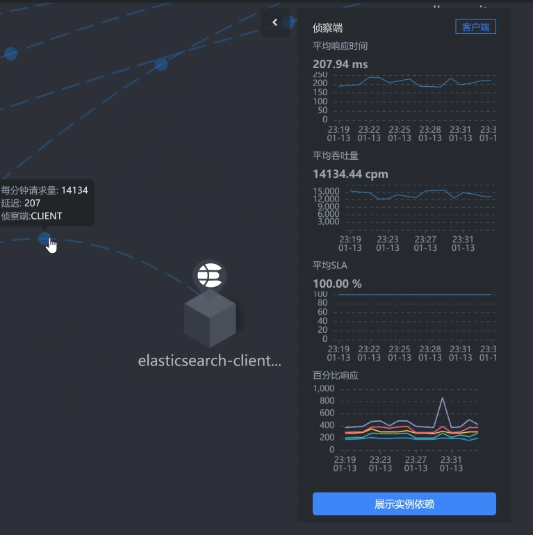
一层层看过之后，我们发现查询商品这个接口的响应时间消耗在了ES client上面。而在我们这个查询的路径上，在gateway/search服务上，我们并没有做什么复杂的动作。
既然知道了响应时间消耗在哪里，下面我们就来定位它，看能不能把TPS优化起来。
全局监控
根据高老师的经验，我们还是从全局监控开始，看全局监控可以让我们更加有的放矢。在分析的过程中，经常有人往下走了几步之后，就开始思维混乱、步伐飘逸。因为数据有很多，所以分析时很容易从一个数据走到不重要的分支上去了。而这时候，如果你心里有全局监控数据，思路就会更清晰，不会在无关的分支上消耗时间。
回到我们这个例子中，从下面的k8s worker（也就是k8s中的node，在我们的环境中我习惯叫成worker，就是为了体现：在我的地盘，我爱叫啥就叫啥）的数据上来看，似乎没有一个worker的资源使用率是特别高的。
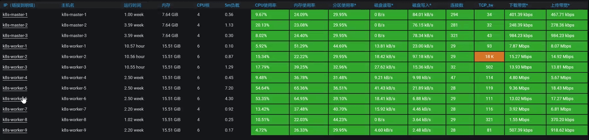
请你注意，在k8s中看资源消耗，一定不要只看worker这个层面，因为这个层面还不够，一个worker上可能会运行多个pod。从上图来看，由于worker层面没有资源消耗，但是时间又明显是消耗在ES client上的，所以，接下来我们要看一下每一个pod的资源使用情况。
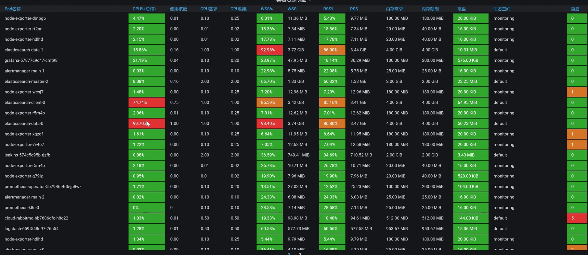
咦，有红色。你看，有两个与ES相关的POD，它们的CPU都飘红了，这下可有得玩了。既然是与ES相关的POD，那我们就把ES所有的POD排个序看看。
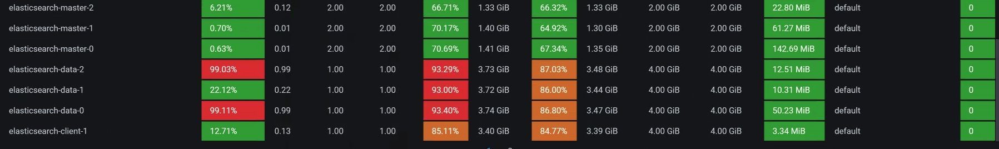
从上图的数据来看，有一个ES Client 消耗了67%的CPU，有两个ES Data消耗了99%的CPU，ES本来就是吃CPU的大户，所以我们接下来要着重分析它。
这里我再说明一点，我们从前面的worker资源使用率一步一步走到这里，在分析方向上是合情合理的，因为这些都是属于我提到的全局监控的内容。
定向分析
现在我们就来扒一扒ES，看看它在哪个worker节点上。罗列Pod信息如下：
[root@k8s-master-1 ~]# kubectl get pods -o wide | grep elasticsearch
elasticsearch-client-0 1/1 Running 0 6h43m 10.100.230.2 k8s-worker-1 <none> <none>
elasticsearch-client-1 1/1 Running 0 6h45m 10.100.140.8 k8s-worker-2 <none> <none>
elasticsearch-data-0 1/1 Running 0 7h8m 10.100.18.197 k8s-worker-5 <none> <none>
elasticsearch-data-1 1/1 Running 0 7h8m 10.100.5.5 k8s-worker-7 <none> <none>
elasticsearch-data-2 1/1 Running 0 7h8m 10.100.251.67 k8s-worker-9 <none> <none>
elasticsearch-master-0 1/1 Running 0 7h8m 10.100.230.0 k8s-worker-1 <none> <none>
elasticsearch-master-1 1/1 Running 0 7h8m 10.100.227.131 k8s-worker-6 <none> <none>
elasticsearch-master-2 1/1 Running 0 7h8m 10.100.69.206 k8s-worker-3 <none> <none>
[root@k8s-master-1 ~]#
现在就比较清晰了，可以看到，在整个namespace中有两个ES client，三个ES data，三个ES master。
我们来画一个细一点的架构图，以便在脑子里记下这个逻辑：
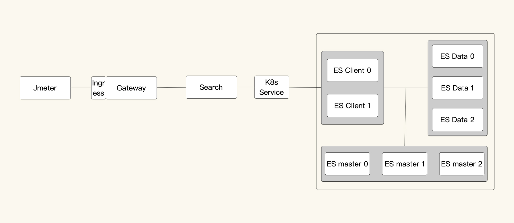
再结合我们在全局分析中看到的资源使用率图，现在判断至少有两个问题：
- ES client请求不均衡；
- ES data CPU 高。
下面我们一个一个来分析。
ES client请求不均衡
从上面的架构图中可以看到，search服务连两个ES client，但是只有一个ES client的CPU使用率高。所以，我们需要查一下链路，看看ES的service：
[root@k8s-master-1 ~]# kubectl get svc -o wide | grep search
elasticsearch-client NodePort 10.96.140.52 <none> 9200:30200/TCP,9300:31614/TCP 34d app=elasticsearch-client,chart=elasticsearch,heritage=Helm,release=elasticsearch-client
elasticsearch-client-headless ClusterIP None <none> 9200/TCP,9300/TCP 34d app=elasticsearch-client
elasticsearch-data ClusterIP 10.96.16.151 <none> 9200/TCP,9300/TCP 7h41m app=elasticsearch-data,chart=elasticsearch,heritage=Helm,release=elasticsearch-data
elasticsearch-data-headless ClusterIP None <none> 9200/TCP,9300/TCP 7h41m app=elasticsearch-data
elasticsearch-master ClusterIP 10.96.207.238 <none> 9200/TCP,9300/TCP 7h41m app=elasticsearch-master,chart=elasticsearch,heritage=Helm,release=elasticsearch-master
elasticsearch-master-headless ClusterIP None <none> 9200/TCP,9300/TCP 7h41m app=elasticsearch-master
svc-mall-search ClusterIP 10.96.27.150 <none> 8081/TCP 44d app=svc-mall-search
[root@k8s-master-1 ~]#
你看，整个namespace中有一个client service（解析出来的是VIP，访问此服务时不会绕过K8s的转发机制），还有一个client-headless service（解析出来的是POD IP，访问这个服务时会绕过K8s的转发机制）。
接下来，我们查一下为什么会出现访问不均衡的情况。
通过查看search服务的ES配置，我们看到如下信息：
elasticsearch:
rest:
uris: elasticsearch-client:9200
username: elastic
password: admin@123
看到我们这里是用的elasticsearch-client:9200，我们再来看一下client service的配置：
---
apiVersion: v1
kind: Service
metadata:
annotations:
meta.helm.sh/release-name: elasticsearch-client
meta.helm.sh/release-namespace: default
creationTimestamp: '2020-12-10T17:34:19Z'
labels:
app: elasticsearch-client
app.kubernetes.io/managed-by: Helm
chart: elasticsearch
heritage: Helm
release: elasticsearch-client
managedFields:
- apiVersion: v1
fieldsType: FieldsV1
fieldsV1:
'f:metadata': {}
'f:spec':
'f:ports': {}
manager: Go-http-client
operation: Update
time: '2020-12-10T17:34:19Z'
name: elasticsearch-client
namespace: default
resourceVersion: '4803428'
selfLink: /api/v1/namespaces/default/services/elasticsearch-client
uid: 457e962e-bee0-49b7-9ec4-ebfbef0fecdd
spec:
clusterIP: 10.96.140.52
externalTrafficPolicy: Cluster
ports:
- name: http
nodePort: 30200
port: 9200
protocol: TCP
targetPort: 9200
- name: transport
nodePort: 31614
port: 9300
protocol: TCP
targetPort: 9300
selector:
app: elasticsearch-client
chart: elasticsearch
heritage: Helm
release: elasticsearch-client
sessionAffinity: None
type: NodePort
从上面的配置来看，sessionAffinity也配置为None了，也就是说这个service不以客户端的IP来保持session。因为在这个环境配置中，Type为NodePort，而我们在k8s中配置的转发规则是iptables。所以说，service是依赖iptables的规则来做后端转发的。
接下来，我们检查一下iptables的转发规则。
我们先来看iptables中关于ES client的规则：
[root@k8s-master-1 ~]# iptables -S KUBE-SERVICES -t nat|grep elasticsearch-client|grep 9200
-A KUBE-SERVICES ! -s 10.100.0.0/16 -d 10.96.140.52/32 -p tcp -m comment --comment "default/elasticsearch-client:http cluster IP" -m tcp --dport 9200 -j KUBE-MARK-MASQ
-A KUBE-SERVICES -d 10.96.140.52/32 -p tcp -m comment --comment "default/elasticsearch-client:http cluster IP" -m tcp --dport 9200 -j KUBE-SVC-XCX4XZ2WPAE7BUZ4
[root@k8s-master-1 ~]#
可以看到，service的规则名是KUBE-SVC-XCX4XZ2WPAE7BUZ4，那我们再去查它对应的iptables规则：
[root@k8s-master-1 ~]# iptables -S KUBE-SVC-XCX4XZ2WPAE7BUZ4 -t nat
-N KUBE-SVC-XCX4XZ2WPAE7BUZ4
-A KUBE-SVC-XCX4XZ2WPAE7BUZ4 -m comment --comment "default/elasticsearch-client:http" -j KUBE-SEP-LO263M5QW4XA6E3Q
[root@k8s-master-1 ~]#
[root@k8s-master-1 ~]# iptables -S KUBE-SEP-LO263M5QW4XA6E3Q -t nat
-N KUBE-SEP-LO263M5QW4XA6E3Q
-A KUBE-SEP-LO263M5QW4XA6E3Q -s 10.100.227.130/32 -m comment --comment "default/elasticsearch-client:http" -j KUBE-MARK-MASQ
-A KUBE-SEP-LO263M5QW4XA6E3Q -p tcp -m comment --comment "default/elasticsearch-client:http" -m tcp -j DNAT --to-destination 10.100.227.130:9200
问题来了，这里好像没有负载均衡的配置（没有probability参数），并且根据iptables规则也只是转发到了一个ES client上。到这里，其实我们也就能理解，为什么在全局监控的时候，我们只看到一个ES client有那么高的CPU使用率，而另一个ES client却一点动静都没有。
但是，这里的iptables规则并不是自己来配置的，而是在部署k8s的时候自动刷进去的规则。现在只有一条规则了，所以只能转发到一个POD上去。
那我们就再刷一遍ES的POD，重装一下ES的POD，看k8s自己能不能刷出来负载均衡的iptables规则。重来一遍之后，我们再来看iptables规则：
[root@k8s-master-1 ~]# iptables -S KUBE-SVC-XCX4XZ2WPAE7BUZ4 -t nat
-N KUBE-SVC-XCX4XZ2WPAE7BUZ4
-A KUBE-SVC-XCX4XZ2WPAE7BUZ4 -m comment --comment "default/elasticsearch-client:http" -m statistic --mode random --probability 0.50000000000 -j KUBE-SEP-IFM4L7YNSTSJP4YT
-A KUBE-SVC-XCX4XZ2WPAE7BUZ4 -m comment --comment "default/elasticsearch-client:http" -j KUBE-SEP-5RAP6F6FATXC4DFL
[root@k8s-master-1 ~]#
哟，现在刷出来两条iptables规则了，看来之前在我们不断折腾的部署过程中，ES client一直是有问题的。
在上面的iptables规则里，那两条iptables的上一条中有一个关键词“——probability 0.50000000000”。我们知道，iptables的匹配规则是从上到下的，既然上一条的匹配是随机0.5，也就是说只有50%的请求会走第一条规则，那下一条自然也是随机0.5了，因为总共只有两条规则嘛。这样一来就均衡了。
我们再接着做这个接口的压力场景，看到如下信息：
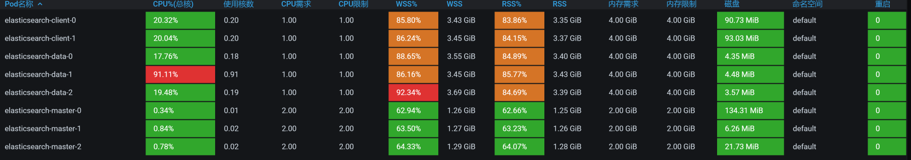
看起来ES client均衡了，对不对？
它对应的TPS，如下：
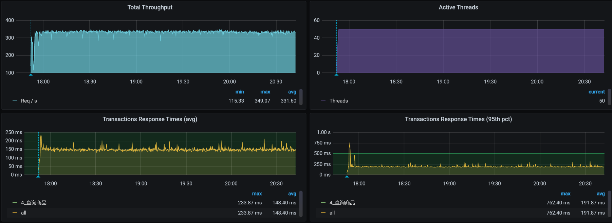
明显TPS提升了60左右。
ES client请求不均衡的问题解决了，现在，我们还要来看一下ES data单节点CPU高的问题。
ES Data CPU使用率高
- 第一阶段：加一个CPU
在TPS提升之后，我们再来看一下全局监控数据。
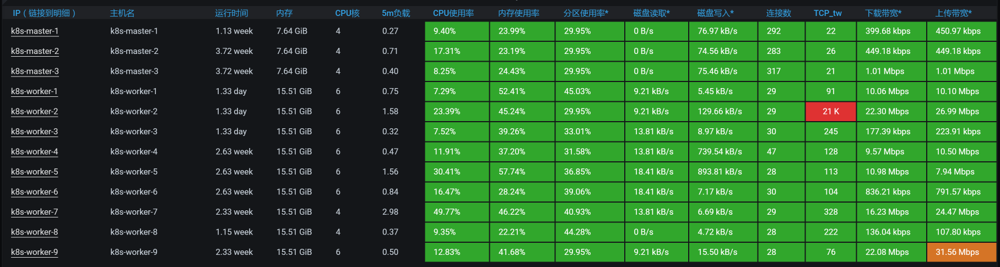
看起来比一开始好多了。基于前面分析ES client的经验，我们就先来查一下ES data的iptables规则：
-- 查看下有哪些ES data的POD
[root@k8s-master-1 ~]# kubectl get pods -o wide | grep data
elasticsearch-data-0 1/1 Running 0 10h 10.100.18.197 k8s-worker-5 <none> <none>
elasticsearch-data-1 1/1 Running 0 10h 10.100.5.5 k8s-worker-7 <none> <none>
elasticsearch-data-2 1/1 Running 0 10h 10.100.251.67 k8s-worker-9 <none> <none>
-- 查看ES data对应的iptables规则
[root@k8s-master-1 ~]# iptables -S KUBE-SERVICES -t nat|grep elasticsearch-data
-A KUBE-SERVICES ! -s 10.100.0.0/16 -d 10.96.16.151/32 -p tcp -m comment --comment "default/elasticsearch-data:http cluster IP" -m tcp --dport 9200 -j KUBE-MARK-MASQ
-A KUBE-SERVICES -d 10.96.16.151/32 -p tcp -m comment --comment "default/elasticsearch-data:http cluster IP" -m tcp --dport 9200 -j KUBE-SVC-4LU6GV7CN63XJXEQ
-A KUBE-SERVICES ! -s 10.100.0.0/16 -d 10.96.16.151/32 -p tcp -m comment --comment "default/elasticsearch-data:transport cluster IP" -m tcp --dport 9300 -j KUBE-MARK-MASQ
-A KUBE-SERVICES -d 10.96.16.151/32 -p tcp -m comment --comment "default/elasticsearch-data:transport cluster IP" -m tcp --dport 9300 -j KUBE-SVC-W4QKPGOO4JGYQZDQ
-- 查看9200（外部通信）对应的规则
[root@k8s-master-1 ~]# iptables -S KUBE-SVC-4LU6GV7CN63XJXEQ -t nat
-N KUBE-SVC-4LU6GV7CN63XJXEQ
-A KUBE-SVC-4LU6GV7CN63XJXEQ -m comment --comment "default/elasticsearch-data:http" -m statistic --mode random --probability 0.33333333349 -j KUBE-SEP-ZHLKOYKJY5GV3ZVN
-A KUBE-SVC-4LU6GV7CN63XJXEQ -m comment --comment "default/elasticsearch-data:http" -m statistic --mode random --probability 1 -j KUBE-SEP-6ILKZEZS3TMCB4VJ
-A KUBE-SVC-4LU6GV7CN63XJXEQ -m comment --comment "default/elasticsearch-data:http" -j KUBE-SEP-JOYLBDPA3LNXKWUK
-- 查看以上三条规则的转发目标
[root@k8s-master-1 ~]# iptables -S KUBE-SEP-ZHLKOYKJY5GV3ZVN -t nat
-N KUBE-SEP-ZHLKOYKJY5GV3ZVN
-A KUBE-SEP-ZHLKOYKJY5GV3ZVN -s 10.100.18.197/32 -m comment --comment "default/elasticsearch-data:http" -j KUBE-MARK-MASQ
-A KUBE-SEP-ZHLKOYKJY5GV3ZVN -p tcp -m comment --comment "default/elasticsearch-data:http" -m tcp -j DNAT --to-destination 10.100.18.197:9200
[root@k8s-master-1 ~]# iptables -S KUBE-SEP-6ILKZEZS3TMCB4VJ -t nat
-N KUBE-SEP-6ILKZEZS3TMCB4VJ
-A KUBE-SEP-6ILKZEZS3TMCB4VJ -s 10.100.251.67/32 -m comment --comment "default/elasticsearch-data:http" -j KUBE-MARK-MASQ
-A KUBE-SEP-6ILKZEZS3TMCB4VJ -p tcp -m comment --comment "default/elasticsearch-data:http" -m tcp -j DNAT --to-destination 10.100.251.67:9200
[root@k8s-master-1 ~]# iptables -S KUBE-SEP-JOYLBDPA3LNXKWUK -t nat
-N KUBE-SEP-JOYLBDPA3LNXKWUK
-A KUBE-SEP-JOYLBDPA3LNXKWUK -s 10.100.5.5/32 -m comment --comment "default/elasticsearch-data:http" -j KUBE-MARK-MASQ
-A KUBE-SEP-JOYLBDPA3LNXKWUK -p tcp -m comment --comment "default/elasticsearch-data:http" -m tcp -j DNAT --to-destination 10.100.5.5:9200
[root@k8s-master-1 ~]
Everything is perfect!！规则很合理。ES Data总共有三个pod，从逻辑上来看，它们各占了三分之一。
在前面的ES client分析中，我们讲到，第一个POD是0.5，下一条自然也只剩下0.5，这很容易理解。现在，ES data的部分有三条iptables规则，我们来简单说明一下。
通常我们理解的iptables就是一个防火墙。不过，要是从根本上来讲，它不算是一个防火墙，只是一堆规则列表，而通过iptables设计的规则列表，请求会对应到netfilter框架中去，而这个netfilter框架，才是真正的防火墙。其中，netfilter是处于内核中的，iptables就只是一个用户空间上的配置工具而已。
我们知道iptables有四表五链。四表是：fileter表（负责过滤）、nat表（负责地址转换）、mangle表（负责解析）、raw表（关闭nat表上启用的连接追踪）；五链是：prerouting链（路由前）、input链（输入规则）、forward链（转发规则）、output链（输出规则）、postrouting链（路由后）。
而在这一部分，我们主要是看nat表以及其上的链。对于其他的部分，如果你想学习，可自行查阅iptables相关知识。毕竟，我还时刻记得自己写的是一个性能专栏，而不是计算机基础知识专栏，哈哈。
从上面的信息可以看到，我们的这个集群中有三个ES data服务，对应着三条转发规则，其中，第一条规则的匹配比例是：0.33333333349；第二条比例：0.50000000000；第三条是1。而这三条转发规则对应的POD IP和端口分别是：10.100.18.197:9200、10.100.251.67:9200、10.100.5.5:9200，这也就意味着，通过这三条iptables规则可以实现负载均衡，画图理解如下：
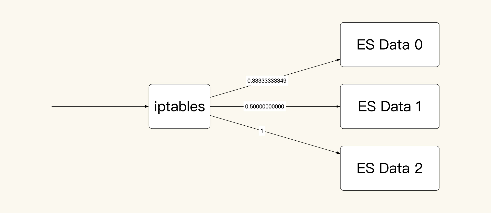
我们假设有30个请求进来，那ES Data 0上就会有30x0.33333333349=10个请求；对于剩下的20个请求，在ES Data 1上就会有20x0.50000000000=10个请求；而最后剩下的10个请求，自然就到了ES Data 2上。这是一个非常均衡的逻辑，只是在iptables规则中，我看着这几个数据比例，实在是觉得别扭。
既然明白了这个逻辑，下面我们还是把查询商品接口的场景压起来看一下：
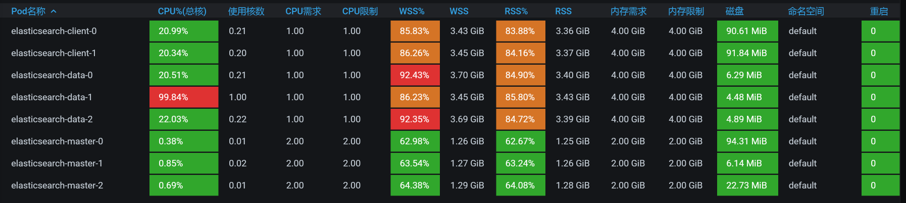
从数据上来看，经常会出现ES data 某个节点消耗CPU高的情况。可是，对应到我们前面看到的全局worker监控界面中，并没有哪个worker的CPU很高。所以，在这里，我们要查一下ES Data中的cgroup配置，看它的限制是多少。
也就是说，ES data的每个POD都是配置了一颗CPU，难怪CPU使用率动不动就红了。
还有一点你要记住，前面我们在查看data列表的时候发现，ES data 0 在worker-5上，ES data 1 在worker-7上，ES data 2 在worker-9上。而我们现在看到的却是，它们都各自分到了一个CPU。既然如此，那我们就再添加一个CPU，然后再回去看一下worker-5/7/9的反应。为什么只加一个CPU呢？因为从worker-7上来看，现在的CPU使用率已经在50%左右了，要是加多了，我怕它吃不消。
看一下压力场景执行的效果：
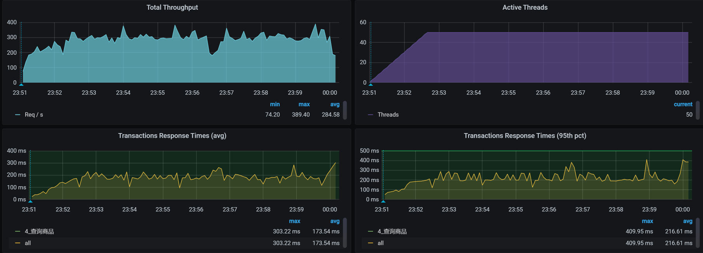
似乎……不怎么样？TPS并没有增加。
- 第二阶段：加副本
我们再看加了CPU之后的全局POD监控：
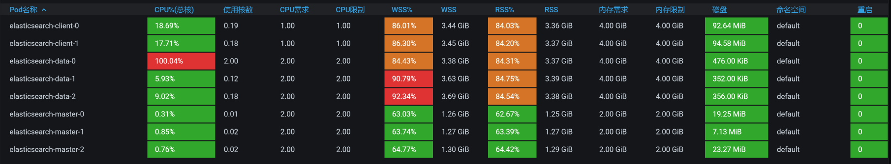
还是只有一个ES data的CPU使用率高，所以我想查一下ES中的数据分布。因为负载均衡的问题解决了，并且知道有三个ES data节点。现在我们就要知道是不是每个节点都被访问到了。
pms 0 p 10.100.18.199 _w 32 17690 18363 6.7mb 7820 true true 8.5.1 false
pms 0 p 10.100.18.199 _15 41 2110 0 465.7kb 5500 true true 8.5.1 true
pms 0 p 10.100.18.199 _16 42 21083 30255 9.5mb 5900 true true 8.5.1 false
pms 0 p 10.100.18.199 _17 43 2572 0 568kb 5500 true true 8.5.1 true
pms 0 p 10.100.18.199 _18 44 1403 0 322.9kb 5500 true true 8.5.1 true
pms 0 p 10.100.18.199 _19 45 1856 0 414.1kb 5500 true true 8.5.1 true
pms 0 p 10.100.18.199 _1a 46 1904 0 423kb 5500 true true 8.5.1 true
为啥数据都在一个节点上（都是10.100.18.199）？看起来只有一个数据副本的原因了。
green open pms A--6O32bQaSBrJPJltOLHQ 1 0 48618 48618 55.1mb 18.3mb
所以，我们先把副本数加上去，因为我们有三个data节点，所以这里加三个副本：
PUT /pms/_settings
{
"number_of_replicas": 3
}
我们再次查看ES中的数据分布，如下所示：
pms 0 r 10.100.18.200 _w 32 17690 18363 6.7mb 7820 true true 8.5.1 false
pms 0 r 10.100.18.200 _15 41 2110 0 465.7kb 5500 true true 8.5.1 true
pms 0 r 10.100.18.200 _16 42 21083 30255 9.5mb 5900 true true 8.5.1 false
pms 0 r 10.100.18.200 _17 43 2572 0 568kb 5500 true true 8.5.1 true
pms 0 r 10.100.18.200 _18 44 1403 0 322.9kb 5500 true true 8.5.1 true
pms 0 r 10.100.18.200 _19 45 1856 0 414.1kb 5500 true true 8.5.1 true
pms 0 r 10.100.18.200 _1a 46 1904 0 423kb 5500 true true 8.5.1 true
pms 0 p 10.100.251.69 _w 32 17690 18363 6.7mb 7820 true true 8.5.1 false
pms 0 p 10.100.251.69 _15 41 2110 0 465.7kb 5500 true true 8.5.1 true
pms 0 p 10.100.251.69 _16 42 21083 30255 9.5mb 5900 true true 8.5.1 false
pms 0 p 10.100.251.69 _17 43 2572 0 568kb 5500 true true 8.5.1 true
pms 0 p 10.100.251.69 _18 44 1403 0 322.9kb 5500 true true 8.5.1 true
pms 0 p 10.100.251.69 _19 45 1856 0 414.1kb 5500 true true 8.5.1 true
pms 0 p 10.100.251.69 _1a 46 1904 0 423kb 5500 true true 8.5.1 true
pms 0 r 10.100.140.10 _w 32 17690 18363 6.7mb 7820 true true 8.5.1 false
pms 0 r 10.100.140.10 _15 41 2110 0 465.7kb 5500 true true 8.5.1 true
pms 0 r 10.100.140.10 _16 42 21083 30255 9.5mb 5900 true true 8.5.1 false
pms 0 r 10.100.140.10 _17 43 2572 0 568kb 5500 true true 8.5.1 true
pms 0 r 10.100.140.10 _18 44 1403 0 322.9kb 5500 true true 8.5.1 true
pms 0 r 10.100.140.10 _19 45 1856 0 414.1kb 5500 true true 8.5.1 true
pms 0 r 10.100.140.10 _1a 46 1904 0 423kb 5500 true true 8.5.1 true
我们接着压起来，看看POD的资源：
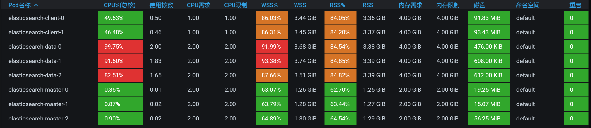
现在看着是不是开心多了？data节点的CPU都用起来了。
我们再看一下worker的资源：
[root@k8s-master-1 ~]# kubectl get pods -o wide | grep data
elasticsearch-data-0 1/1 Running 0 16m 10.100.18.199 k8s-worker-5 <none> <none>
elasticsearch-data-1 1/1 Running 0 17m 10.100.251.68 k8s-worker-9 <none> <none>
elasticsearch-data-2 1/1 Running 0 18m 10.100.140.9 k8s-worker-2 <none> <none>
现在ES Data的POD分布到2、5、9三这个worker上去了，我们查看下全局监控：

嗯，不错，ES data的POD把资源用起来了。其实这里要想继续调，还可以把CPU加大，ES本来就是吃CPU、内存的大户。不过，我们前面在配置的时候，给ES data的CPU也确实太小了。这个问题，并不是我故意设计出来的，而是当时在部署的时候，没考虑到这些。
最后，我们来看优化后的效果：
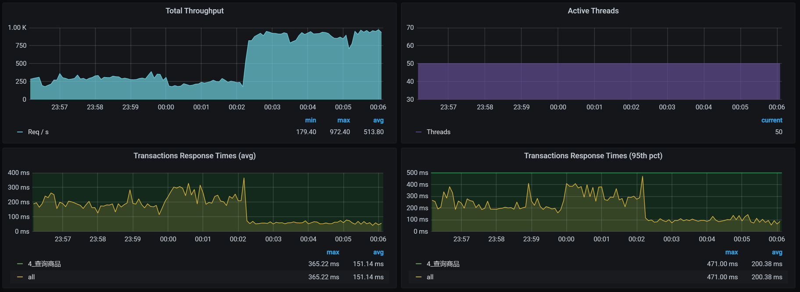
呀呀呀，你看TPS压都压不住呀，很快涨到900左右了！这个优化结果很好。
现在回过头来看第一个阶段，我们加CPU没有效果，主要还是因为副本数量太少。其实，在ES的优化中，还有很多细节可以玩。只不过，在我们这个课程中，我希望给你的是一个整体的分析思路和逻辑，而不是纠结于每个细节上的参数。所以，在这里，我们就不再说具体参数的调整了。
如果你想在ES上做更多的优化，可以在分析完业务之后，确定一下ES的架构、数据索引、分片等信息，然后再来设计一个合理的ES部署。
总结
在这节课中，我们看到APM工具也有无能为力的地方。所以说，当我们分析到一个具体组件之后，要想再往下分析，就得靠自己的技术功底了。
在出现请求不均衡的时候，我们一定要先去看负载均衡的逻辑有没有问题。当看到ES client不均衡时，我们去看了iptables的原理，在发现iptables只有一个转发规则的时候，接下来要做的当然就是重刷转发规则了。
在ES client转发均衡了之后，我们在ES data单节点上又看到CPU使用率过高。由于ES data在POD当中，我们自然就要想到去看cgroup的限制。
而在添加了CPU之后，我们发现TPS并没有提高，这时候就要去看ES的逻辑了。ES的强大之处就在于多副本多分片的查询能力，所以，我们增加了副本之后，CPU就用起来了，这是一个合理的优化结果，TPS也自然提高了。
经过一系列的动作，我们终于把资源给用起来了。这也是我一直在强调的，性能优化第一个阶段的目标，就是把资源给用起来，然后再考虑更细节的优化。
课后作业
最后，我给你留两道题，请你思考一下：
- 当负载出现不均衡时，主要的分析方向是什么？
- 什么时候才需要去看组件内部的实现逻辑？
记得在留言区和我讨论、交流你的想法，每一次思考都会让你更进一步。
如果你读完这篇文章有所收获，也欢迎你分享给你的朋友，共同学习进步。我们下一讲再见！
© 2019 - 2023 Liangliang Lee. Powered by gin and hexo-theme-book.